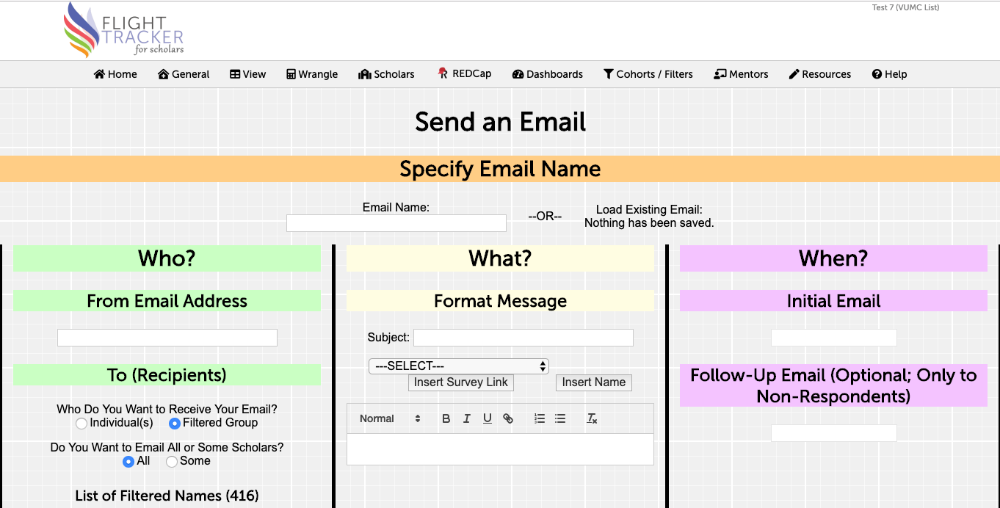

Configuring Emails
Flight Tracker allows you to configure emails for certain audiences within your group of scholars and to include links to REDCap Surveys. Emails will be sent at a certain time individually, with optional name fields to customize the email for the individual scholar.

Specify Email Name
You must name your email with a unique name. You can pre-load information from prior emails by selecting it from the dropdown.
Who?
The From Email Address must be specified. An example would by joe.user@vumc.org.
In addition, by answering a few questions about your intended audience (i.e., the To), you can filter your list of scholars to only those who fit certain characteristics. Factors to filter are as follows:
- Individual(s) vs. Filtered Group: Selecting Individual(s) will provide you with checkboxes for each individual so as to select the scholars; selecting a Filtered Group will allow you to specify characteristics of a group.
- All vs. Some: Selecting All scholars will email your entire population. Selecting Some scholars will provide a few more questions.
- Have Any Surveys Been Completed? Selecting No will only email scholars who have never completed a survey. Selecting Yes will provide another question.
- The Scholar Hasn’t Filled Out a Survey in Last X Months: You can provide this number. It must be a whole number. This allows you to screen out people who have recently communicated.
- What are the Maximum Number of Emails a Scholar Can Receive? Selecting Unlimited will select everyone. Selecting Limit to Number will provide you with a follow-up question.
- X Emails: You can provide this number. It must be a whole number. Those who have received this number of emails will not receive another email.
- Has the Scholar Received an R01-or-Equivalent Grant? Selecting No will allow you to address all scholars on the K phase of their career. Selecting Yes will allow you to address all scholars who are on the R phase (i.e., converted) of their career. Selecting Doesn’t Matter will address everyone.
What?
The Subject specifies the subject of the email.
There is a box with rich-text formatting for you to type in the body of the email. You can insert the following fields:
- A Survey Link to a particular survey. Any REDCap survey in the project can be linked, including the ones you add yourself. It is recommended to send out one email per survey.
- The Name (full first name and last name) of the scholar
When?
The Initial Email time can be selected. We have our best response rates on Tuesdays, Wednesdays, and Thursdays. This will automatically queue the mass email up.
If desired, a Follow-Up Email can be scheduled to send to non-respondents. Those who have not responded will receive an email with identical text to the first. Those who have responded will not receive any more communication.